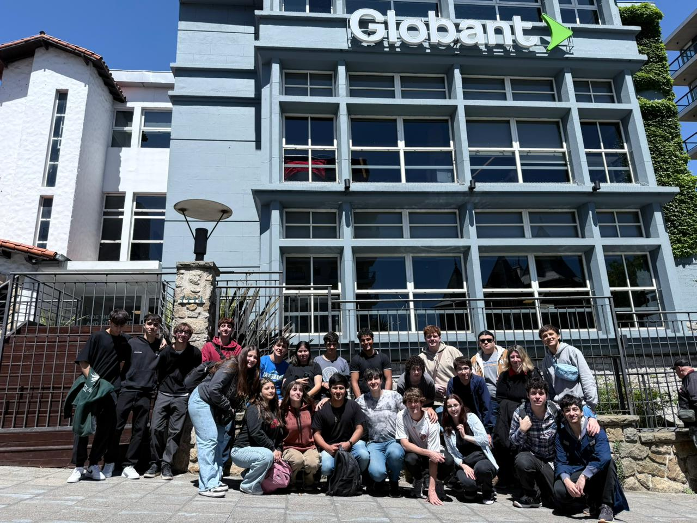
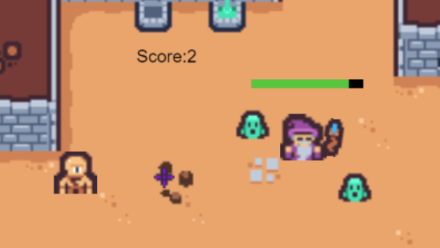

Algunos acontecimientos destacables de los últimos 7 años

Salida a Globant

Juego para la Expo2022
Desarrollado junto a Lautaro Galván y Máximo Digialleonardo
Robot Arduino Siguelinea Expo2023
Ensamblado junto a Mateo Palotta y Matías Fanti
Conocimientos adquiridos
Adquirí una sólida base en desarrollo web. Tanto Frontend como backend. Aprendí los fundamentos de HTML, CSS y
JavaScript y algunos frameworks como Bootstrap, React y Node.js. Exploré conceptos como la responsividad, para
asegurar que mis diseños se adapten a diferentes dispositivos.
Programé en varios lenguajes, algunos son: C++, Java, Javascript, PHP y Python. Desarrollando en cada uno de estos la
programación orientada a objetos y la recursividad, más que nada en las olimpiadas.
Tambien pude desarrollar aplicaciones tanto de escritorio como moviles con Java.
Aprendí a cablear y configurar redes completas, incluyendo la instalación y configuración de dispositivos esenciales
como routers y switches. Simularlas, mapearlas y auditarlas mediante softwares como Cisco Packet Tracer y NMap
respectivamente. Este conocimiento me permite diseñar y mantener redes funcionales para diversos entornos.
Aprendí a instalar, configurar y utilizar algunos sistemas operativos, Windows y Linux, en sus versiones comerciales
y de servidor. Esto incluye la administración de grupos, usuarios y otras configuraciones avanzadas para un
funcionamiento óptimo y aprovechar al máximo el hardware.
Pude especializarme en el armado y reparacion de PC,
llevando a la practica los conocimientos que adquirí, tanto en la escuela como por mi cuenta,
en la escuela y en las practicas profesionalizantes.